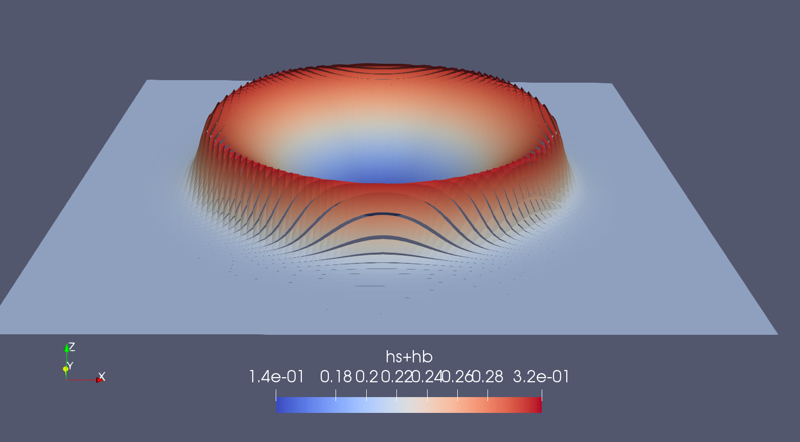

Shallow Water Equations Example

Introduction
This example shows how to solve the Shallow Water Equations in 1D and 2D.
Continuous Governing Equations
We solve the following equation:
where $\mathbf{u}=(u,v)$ depending on how many spatial dimensions we are using, and $\mathbf{U}=h \mathbf{u}$, with $h=h_s(\mathbf{x},t) + h_b(\mathbf{x})$ being the total water column with $h_s$ and $h_b$ being the height of the water surface and depth of the bathymetry, respectively, measured from a zero mean sea-level. We employ periodic boundary conditions across all four walls of the square domain.
Discontinous Galerkin Method
To solve Eq. (1) in one, two, and three dimensions we use the Discontinuous Galerkin method with basis functions comprised of tensor products of one-dimensional Lagrange polynomials based on Lobatto points. Multiplying Eq. (1) by a test function $\psi$ and integrating within each element $\Omega_e$ such that $\Omega = \bigcup_{e=1}^{N_e} \Omega_e$ we get
where $\mathbf{q}^{(e)}_N=\sum_{i=1}^{(N+1)^{dim}} \psi_i(\mathbf{x}) \mathbf{q}_i(t)$ is the finite dimensional expansion with basis functions $\psi(\mathbf{x})$, where $\mathbf{q}=\left( h, \mathbf{U}^T \right)^T$ and
math \mathbf{f}=\left( \mathbf{U}, \frac{\mathbf{U} \otimes \mathbf{U}}{h} + g (h^2 - h^2b) \mathbf{I}2 \right).
Integrating Eq. (2) by parts yields
where the second term on the left denotes the flux integral term (computed in "function fluxrhs") and the third term denotes the volume integral term (computed in "function volumerhs"). The superscript $(*,e)$ in the flux integral term denotes the numerical flux. Here we use the Rusanov flux.
Commented Program
const DFloat = Float64 #Number TypeFloat64Define Input Parameters:
N is polynomial order and brickN(Ne) generates a brick-grid with Ne elements in each direction
N = 4 #polynomial order
#brickN = (10) #1D brickmesh
brickN = (10, 10) #2D brickmesh
tend = DFloat(0.25) #Final Time
δnl = 1.0 #switch to turn on/off nonlinear equations
gravity = 10.0 #gravity
advection=false #Boolean to turn on/off advection or swefalseLoad the MPI and Canary packages where Canary builds the mesh, generates basis functions, and metric terms.
using MPI
using Canary
using Printf: @sprintfThe grid that we create determines the number of spatial dimensions that we are going to use.
dim = length(brickN)2###Output the polynomial order, space dimensions, and element configuration
println("N= ",N)
println("dim= ",dim)
println("brickN= ",brickN)
println("DFloat= ",DFloat)
println("δnl= ",δnl)
println("gravity= ",gravity)
println("advection= ",advection)N= 4
dim= 2
brickN= (10, 10)
DFloat= Float64
δnl= 1.0
gravity= 10.0
advection= falseInitialize MPI and get the communicator, rank, and size
MPI.Initialized() || MPI.Init() # only initialize MPI if not initialized
MPI.finalize_atexit()
mpicomm = MPI.COMM_WORLD
mpirank = MPI.Comm_rank(mpicomm)
mpisize = MPI.Comm_size(mpicomm)1Generate a local view of a fully periodic Cartesian mesh.
if dim == 1
(Nx, ) = brickN
local x = range(DFloat(0); length=Nx+1, stop=1)
mesh = brickmesh((x, ), (true, ); part=mpirank+1, numparts=mpisize)
elseif dim == 2
(Nx, Ny) = brickN
local x = range(DFloat(0); length=Nx+1, stop=1)
local y = range(DFloat(0); length=Ny+1, stop=1)
mesh = brickmesh((x, y), (true, true); part=mpirank+1, numparts=mpisize)
else
(Nx, Ny, Nz) = brickN
local x = range(DFloat(0); length=Nx+1, stop=1)
local y = range(DFloat(0); length=Ny+1, stop=1)
local z = range(DFloat(0); length=Nz+1, stop=1)
mesh = brickmesh((x, y, z), (true, true, true); part=mpirank+1, numparts=mpisize)
end([1 2 … 108 109; 2 3 … 109 110; 12 13 … 119 120; 13 14 … 120 121], [0.0 0.1 0.0 0.1; 0.0 0.0 0.1 0.1]
[0.1 0.2 0.1 0.2; 0.0 0.0 0.1 0.1]
[0.2 0.3 0.2 0.3; 0.0 0.0 0.1 0.1]
...
[0.7 0.8 0.7 0.8; 0.9 0.9 1.0 1.0]
[0.8 0.9 0.8 0.9; 0.9 0.9 1.0 1.0]
[0.9 1.0 0.9 1.0; 0.9 0.9 1.0 1.0], [0 0 … 0 0; 0 0 … 0 0; 0 0 … 0 0; 0 0 … 0 0], Array{Int64,1}[[10, 2, 1, 12], [20, 2, 12, 23], [30, 2, 23, 34], [40, 2, 34, 45], [50, 2, 45, 56], [60, 2, 56, 67], [70, 2, 67, 78], [80, 2, 78, 89], [90, 2, 89, 100], [91, 4, 1, 2], [92, 4, 2, 3], [93, 4, 3, 4], [94, 4, 4, 5], [95, 4, 5, 6], [96, 4, 6, 7], [97, 4, 7, 8], [98, 4, 8, 9], [99, 4, 9, 10], [100, 2, 100, 111], [100, 4, 10, 11]])Partition the mesh using a Hilbert curve based partitioning
mesh = partition(mpicomm, mesh...)([1 2 … 9 10; 2 3 … 10 11; 12 13 … 20 21; 13 14 … 21 22], [0.0 0.1 0.0 0.1; 0.0 0.0 0.1 0.1]
[0.1 0.2 0.1 0.2; 0.0 0.0 0.1 0.1]
[0.1 0.2 0.1 0.2; 0.1 0.1 0.2 0.2]
...
[0.8 0.9 0.8 0.9; 0.1 0.1 0.2 0.2]
[0.8 0.9 0.8 0.9; 0.0 0.0 0.1 0.1]
[0.9 1.0 0.9 1.0; 0.0 0.0 0.1 0.1], [0 0 … 0 0; 0 0 … 0 0; 0 0 … 0 0; 0 0 … 0 0], Array{Int64,1}[[35, 4, 1, 2], [36, 4, 2, 3], [38, 4, 3, 4], [42, 4, 4, 5], [44, 4, 5, 6], [57, 4, 6, 7], [59, 4, 7, 8], [63, 4, 8, 9], [65, 4, 9, 10], [66, 2, 100, 111], [66, 4, 10, 11], [67, 2, 89, 100], [69, 2, 78, 89], [70, 2, 67, 78], [75, 2, 56, 67], [76, 2, 45, 56], [78, 2, 34, 45], [96, 2, 23, 34], [97, 2, 12, 23], [100, 2, 1, 12]])Connect the mesh in parallel
mesh = connectmesh(mpicomm, mesh...)(elems = 1:100, realelems = 1:100, ghostelems = 101:100, sendelems = Int64[], elemtocoord = [0.0 0.1 0.0 0.1; 0.0 0.0 0.1 0.1]
[0.1 0.2 0.1 0.2; 0.0 0.0 0.1 0.1]
[0.1 0.2 0.1 0.2; 0.1 0.1 0.2 0.2]
...
[0.8 0.9 0.8 0.9; 0.1 0.1 0.2 0.2]
[0.8 0.9 0.8 0.9; 0.0 0.0 0.1 0.1]
[0.9 1.0 0.9 1.0; 0.0 0.0 0.1 0.1], elemtoelem = [100 1 … 92 99; 2 9 … 100 1; 35 36 … 65 66; 4 3 … 98 97], elemtoface = [2 2 … 2 2; 1 1 … 1 1; 4 4 … 4 4; 3 3 … 3 3], elemtoordr = [1 1 … 1 1; 1 1 … 1 1; 1 1 … 1 1; 1 1 … 1 1], elemtobndy = [0 0 … 0 0; 0 0 … 0 0; 0 0 … 0 0; 0 0 … 0 0], nabrtorank = Int64[], nabrtorecv = UnitRange{Int64}[], nabrtosend = UnitRange{Int64}[])Get the degrees of freedom along the faces of each element.
vmap(:,f,e) gives the list of local (mpirank) points for the face "f" of element "e". vmapP points to the outward (or neighbor) element and vmapM for the current element. P=+ or right and M=- or left.
(vmapM, vmapP) = mappings(N, mesh.elemtoelem, mesh.elemtoface, mesh.elemtoordr)([1 5 1 21; 6 10 2 22; … ; 16 20 4 24; 21 25 5 25]
[26 30 26 46; 31 35 27 47; … ; 41 45 29 49; 46 50 30 50]
[51 55 51 71; 56 60 52 72; … ; 66 70 54 74; 71 75 55 75]
...
[2426 2430 2426 2446; 2431 2435 2427 2447; … ; 2441 2445 2429 2449; 2446 2450 2430 2450]
[2451 2455 2451 2471; 2456 2460 2452 2472; … ; 2466 2470 2454 2474; 2471 2475 2455 2475]
[2476 2480 2476 2496; 2481 2485 2477 2497; … ; 2491 2495 2479 2499; 2496 2500 2480 2500], [2480 26 871 76; 2485 31 872 77; … ; 2495 41 874 79; 2500 46 875 80]
[5 201 896 51; 10 206 897 52; … ; 20 216 899 54; 25 221 900 55]
[80 176 46 126; 85 181 47 127; … ; 95 191 49 129; 100 196 50 130]
...
[2305 2401 2471 2351; 2310 2406 2472 2352; … ; 2320 2416 2474 2354; 2325 2421 2475 2355]
[2280 2476 1621 2426; 2285 2481 1622 2427; … ; 2295 2491 1624 2429; 2300 2496 1625 2430]
[2455 1 1646 2401; 2460 6 1647 2402; … ; 2470 16 1649 2404; 2475 21 1650 2405])Create 1-D operators
and $\omega$ are the 1D Lobatto points and weights and $D$ is the derivative of the basis function.
(ξ, ω) = lglpoints(DFloat, N)
D = spectralderivative(ξ)5×5 Array{Float64,2}:
-5.0 6.7565 -2.66667 1.41016 -0.5
-1.24099 4.44089e-16 1.74574 -0.763763 0.25901
0.375 -1.33658 6.66134e-16 1.33658 -0.375
-0.25901 0.763763 -1.74574 -2.66454e-15 1.24099
0.5 -1.41016 2.66667 -6.7565 5.0Compute metric terms
nface and nelem refers to the total number of faces and elements for this MPI rank. Also, coord contains the dim-tuple coordinates in the mesh.
(nface, nelem) = size(mesh.elemtoelem)
coord = creategrid(Val(dim), mesh.elemtocoord, ξ)
if dim == 1
x = coord.x
for j = 1:length(x)
x[j] = x[j]
end
elseif dim == 2
(x, y) = (coord.x, coord.y)
for j = 1:length(x)
#= (x[j], y[j]) = (x[j] .+ sin.(π * x[j]) .* sin.(2 * π * y[j]) / 10,
y[j] .+ sin.(2 * π * x[j]) .* sin.(π * y[j]) / 10)
=#
end
elseif dim == 3
(x, y, z) = (coord.x, coord.y, coord.z)
for j = 1:length(x)
(x[j], y[j], z[j]) = (x[j] + (sin(π * x[j]) * sin(2 * π * y[j]) *
cos(2 * π * z[j])) / 10,
y[j] + (sin(π * y[j]) * sin(2 * π * x[j]) *
cos(2 * π * z[j])) / 10,
z[j] + (sin(π * z[j]) * sin(2 * π * x[j]) *
cos(2 * π * y[j])) / 10)
end
endFirst VTK Call
This first VTK call dumps the mesh out for all mpiranks.
include(joinpath(@__DIR__, "vtk.jl"))
writemesh(@sprintf("viz/SWE%dD_rank_%04d_mesh", dim, mpirank), coord...;
realelems=mesh.realelems)Compute the metric terms
This call computes the metric terms of the grid such as $\xi_\mathbf{x}$, $\eta_\mathbf{x}$, $\zeta_\mathbf{x}$ for all spatial dimensions $\mathbf{x}$ depending on the dimension of $dim$.
metric = computemetric(coord..., D)Generate the State Vectors
We need to create as many velocity vectors as there are dimensions.
if dim == 1
statesyms = (:h, :U)
elseif dim == 2
statesyms = (:h, :U, :V)
elseif dim == 3
statesyms = (:h, :U, :V, :W)
end(:h, :U, :V)Create storage for state vector and right-hand side
Q holds the solution vector and rhs the rhs-vector which are dim+1 tuples In addition, here we generate the initial conditions
Q = NamedTuple{statesyms}(ntuple(j->zero(coord.x), length(statesyms)))
rhs = NamedTuple{statesyms}(ntuple(j->zero(coord.x), length(statesyms)))
if dim == 1
bathymetry = zero(coord.x)
for i=1:length(coord.x)
bathymetry[i]=0.1
end
r=(x .- 0.5).^2
Q.h .= 0.5 .* exp.(-32.0 .* r)
Q.U .= 0
if (advection)
δnl=1.0
gravity=0.0
Q.U .= (Q.h+bathymetry) .* (1.0)
end
#=
for i=1:length(coord.x)
bathymetry[i]=2.0
end
Q.h .= sin.(2 * π * x) .+ 0.0
Q.U .= (Q.h+bathymetry) .* (1.0)
=#
elseif dim == 2
bathymetry = zero(coord.x)
for i=1:length(coord.x)
bathymetry[i]=0.2
end
r=(x .- 0.5).^2 + (y .- 0.5).^2
Q.h .= 0.5 .* exp.(-100.0 .* r)
Q.U .= 0
Q.V .= 0
if (advection)
δnl=1.0
gravity=0.0
Q.U .= (Q.h+bathymetry) .* (1.0)
Q.V .= (Q.h+bathymetry) .* (0.0)
end
#=
for i=1:length(coord.x)
bathymetry[i]=2.0
end
r=(x .- 0.5).^2 + (y .- 0.5).^2
Q.h .= sin.(2 * π * x) .* sin.(2 * π * y)
#Q.h .= 0.5 .* exp.(-8.0 .* r)
Q.U .= (Q.h+bathymetry) .* (1.0)
Q.V .= (Q.h+bathymetry) .* (1.0)
=#
elseif dim == 3
Q.h .= sin.(2 * π * x) .* sin.(2 * π * y) .* sin.(2 * π * z) .+ 2.0
Q.U .= Q.h .* (1.0)
Q.V .= Q.h .* (1.0)
Q.W .= Q.h .* (1.0)
endCompute the time-step size and number of time-steps
Compute a $\Delta t$ such that the Courant number is $1$. This is done for each mpirank and then we do an MPI_Allreduce to find the global minimum.
dt = [floatmax(DFloat)]
if dim == 1
(ξx) = (metric.ξx)
(h,U) = (Q.h+bathymetry,Q.U)
for n = 1:length(U)
loc_dt = (2h[n]) ./ (abs.(U[n] * ξx[n]))
dt[1] = min(dt[1], loc_dt)
end
elseif dim == 2
(ξx, ξy) = (metric.ξx, metric.ξy)
(ηx, ηy) = (metric.ηx, metric.ηy)
(h,U,V) = (Q.h+bathymetry,Q.U,Q.V)
for n = 1:length(U)
loc_dt = (2h[n]) ./ max(abs.(U[n] * ξx[n] + V[n] * ξy[n]),
abs.(U[n] * ηx[n] + V[n] * ηy[n]))
dt[1] = min(dt[1], loc_dt)
end
elseif dim == 3
(ξx, ξy, ξz) = (metric.ξx, metric.ξy, metric.ξz)
(ηx, ηy, ηz) = (metric.ηx, metric.ηy, metric.ηz)
(ζx, ζy, ζz) = (metric.ζx, metric.ζy, metric.ζz)
(h,U,V,W) = (Q.h,Q.U,Q.V,Q.W)
for n = 1:length(U)
loc_dt = (2h[n]) ./ max(abs.(U[n] * ξx[n] + V[n] * ξy[n] + W[n] * ξz[n]),
abs.(U[n] * ηx[n] + V[n] * ηy[n] + W[n] * ηz[n]),
abs.(U[n] * ζx[n] + V[n] * ζy[n] + W[n] * ζz[n]))
dt[1] = min(dt[1], loc_dt)
end
end
dt = MPI.Allreduce(dt[1], MPI.MIN, mpicomm)
dt = DFloat(dt / N^sqrt(2))
dt = 0.0025
nsteps = ceil(Int64, tend / dt)
dt = tend / nsteps
@show (dt, nsteps)Compute the exact solution at the final time.
Later Δ will be used to store the difference between the exact and computed solutions.
Δ = NamedTuple{statesyms}(ntuple(j->zero(coord.x), length(statesyms)))
if dim == 1
Δ.h .= Q.h
Δ.U .= Q.U
elseif dim == 2
Δ.h .= Q.h
Δ.U .= Q.U
Δ.V .= Q.V
elseif dim == 3
u = Q.U ./ Q.h
v = Q.V ./ Q.h
w = Q.W ./ Q.h
Δ.h .= sin.(2 * π * (x - tend * u)) .* sin.(2 * π * (y - tend * v)) .*
sin.(2 * π * (z - tend * w)) .+ 2
Δ.U .= Q.U
Δ.V .= Q.V
Δ.W .= Q.W
end5×5×100 Array{Float64,3}:
[:, :, 1] =
0.0 0.0 0.0 0.0 0.0
0.0 0.0 0.0 0.0 0.0
0.0 0.0 0.0 0.0 0.0
0.0 0.0 0.0 0.0 0.0
0.0 0.0 0.0 0.0 0.0
[:, :, 2] =
0.0 0.0 0.0 0.0 0.0
0.0 0.0 0.0 0.0 0.0
0.0 0.0 0.0 0.0 0.0
0.0 0.0 0.0 0.0 0.0
0.0 0.0 0.0 0.0 0.0
[:, :, 3] =
0.0 0.0 0.0 0.0 0.0
0.0 0.0 0.0 0.0 0.0
0.0 0.0 0.0 0.0 0.0
0.0 0.0 0.0 0.0 0.0
0.0 0.0 0.0 0.0 0.0
...
[:, :, 98] =
0.0 0.0 0.0 0.0 0.0
0.0 0.0 0.0 0.0 0.0
0.0 0.0 0.0 0.0 0.0
0.0 0.0 0.0 0.0 0.0
0.0 0.0 0.0 0.0 0.0
[:, :, 99] =
0.0 0.0 0.0 0.0 0.0
0.0 0.0 0.0 0.0 0.0
0.0 0.0 0.0 0.0 0.0
0.0 0.0 0.0 0.0 0.0
0.0 0.0 0.0 0.0 0.0
[:, :, 100] =
0.0 0.0 0.0 0.0 0.0
0.0 0.0 0.0 0.0 0.0
0.0 0.0 0.0 0.0 0.0
0.0 0.0 0.0 0.0 0.0
0.0 0.0 0.0 0.0 0.0Store Explicit RK Time-stepping Coefficients
We use the fourth-order, low-storage, Runge–Kutta scheme of Carpenter and Kennedy (1994) ((5,4) 2N-Storage RK scheme.
Ref: @TECHREPORT{CarpenterKennedy1994, author = {M.~H. Carpenter and C.~A. Kennedy}, title = {Fourth-order {2N-storage} {Runge-Kutta} schemes}, institution = {National Aeronautics and Space Administration}, year = {1994}, number = {NASA TM-109112}, address = {Langley Research Center, Hampton, VA}, }
RKA = (DFloat(0),
DFloat(-567301805773) / DFloat(1357537059087),
DFloat(-2404267990393) / DFloat(2016746695238),
DFloat(-3550918686646) / DFloat(2091501179385),
DFloat(-1275806237668) / DFloat(842570457699 ))
RKB = (DFloat(1432997174477) / DFloat(9575080441755 ),
DFloat(5161836677717) / DFloat(13612068292357),
DFloat(1720146321549) / DFloat(2090206949498 ),
DFloat(3134564353537) / DFloat(4481467310338 ),
DFloat(2277821191437) / DFloat(14882151754819))
RKC = (DFloat(0),
DFloat(1432997174477) / DFloat(9575080441755),
DFloat(2526269341429) / DFloat(6820363962896),
DFloat(2006345519317) / DFloat(3224310063776),
DFloat(2802321613138) / DFloat(2924317926251))Volume RHS Routines
These functions solve the volume term $\int_{\Omega_e} \nabla \psi \cdot \left( \rho \mathbf{u} \right)^{(e)}_N$ for: Volume RHS for 1D
function volumerhs!(rhs, Q::NamedTuple{S, NTuple{2, T}}, bathymetry, metric, D, ω, elems, gravity, δnl) where {S, T}
(rhsh, rhsU) = (rhs.h, rhs.U)
(h, U) = (Q.h, Q.U)
Nq = size(h, 1)
J = metric.J
ξx = metric.ξx
for e ∈ elems
#Get primitive variables and fluxes
hb=bathymetry[:,e]
hs=h[:,e]
ht=hs + hb
u=U[:,e] ./ ht
fluxh=U[:,e]
fluxU=(ht .* u .* u + 0.5 .* gravity .* hs .^2) .* δnl + gravity .* hs .* hbloop of ξ-grid lines
rhsh[:,e] += D' * (ω .* J[:,e] .* (ξx[:,e] .* fluxh[:]))
rhsU[:,e] += D' * (ω .* J[:,e] .* (ξx[:,e] .* fluxU[:])) #assuming dhb/dx=0: need to include it
end #e ∈ elems
end #function volumerhs-1dvolumerhs! (generic function with 1 method)Volume RHS for 2D
function volumerhs!(rhs, Q::NamedTuple{S, NTuple{3, T}}, bathymetry, metric, D, ω, elems, gravity, δnl) where {S, T}
(rhsh, rhsU, rhsV) = (rhs.h, rhs.U, rhs.V)
(h, U, V) = (Q.h, Q.U, Q.V)
Nq = size(h, 1)
J = metric.J
dim=2
(ξx, ξy) = (metric.ξx, metric.ξy)
(ηx, ηy) = (metric.ηx, metric.ηy)
fluxh=Array{DFloat,3}(undef,dim,Nq,Nq)
fluxU=Array{DFloat,3}(undef,dim,Nq,Nq)
fluxV=Array{DFloat,3}(undef,dim,Nq,Nq)
for e ∈ elems
#Get primitive variables and fluxes
hb=bathymetry[:,:,e]
hs=h[:,:,e]
ht=hs + hb
u=U[:,:,e] ./ ht
v=V[:,:,e] ./ ht
fluxh[1,:,:]=U[:,:,e]
fluxh[2,:,:]=V[:,:,e]
fluxU[1,:,:]=(ht .* u .* u + 0.5 .* gravity .* hs .^2) .* δnl + gravity .* hs .* hb
fluxU[2,:,:]=(ht .* u .* v) .* δnl
fluxV[1,:,:]=(ht .* v .* u) .* δnl
fluxV[2,:,:]=(ht .* v .* v + 0.5 .* gravity .* hs .^2) .* δnl + gravity .* hs .* hbloop of ξ-grid lines
for j = 1:Nq
rhsh[:,j,e] += D' * (ω[j] * ω .* J[:,j,e].* (ξx[:,j,e] .* fluxh[1,:,j] + ξy[:,j,e] .* fluxh[2,:,j]))
rhsU[:,j,e] += D' * (ω[j] * ω .* J[:,j,e].* (ξx[:,j,e] .* fluxU[1,:,j] + ξy[:,j,e] .* fluxU[2,:,j]))
rhsV[:,j,e] += D' * (ω[j] * ω .* J[:,j,e].* (ξx[:,j,e] .* fluxV[1,:,j] + ξy[:,j,e] .* fluxV[2,:,j]))
end #jloop of η-grid lines
for i = 1:Nq
rhsh[i,:,e] += D' * (ω[i] * ω .* J[i,:,e].* (ηx[i,:,e] .* fluxh[1,i,:] + ηy[i,:,e] .* fluxh[2,i,:]))
rhsU[i,:,e] += D' * (ω[i] * ω .* J[i,:,e].* (ηx[i,:,e] .* fluxU[1,i,:] + ηy[i,:,e] .* fluxU[2,i,:]))
rhsV[i,:,e] += D' * (ω[i] * ω .* J[i,:,e].* (ηx[i,:,e] .* fluxV[1,i,:] + ηy[i,:,e] .* fluxV[2,i,:]))
end #i
end #e ∈ elems
end #function volumerhs-2dvolumerhs! (generic function with 2 methods)Flux RHS Routines
These functions solve the flux integral term $\int_{\Gamma_e} \psi \mathbf{n} \cdot \left( \rho \mathbf{u} \right)^{(*,e)}_N$ for: Flux RHS for 1D
function fluxrhs!(rhs, Q::NamedTuple{S, NTuple{2, T}}, bathymetry, metric, ω, elems, vmapM, vmapP, gravity, δnl) where {S, T}
(rhsh, rhsU) = (rhs.h, rhs.U)
(h, U) = (Q.h, Q.U)
nface = 2
(nx, sJ) = (metric.nx, metric.sJ)
nx = reshape(nx, size(vmapM))
sJ = reshape(sJ, size(vmapM))
for e ∈ elems
for f ∈ 1:nface
#Compute fluxes on M/Left/- side
hsM = h[vmapM[1, f, e]]
hbM=bathymetry[vmapM[1, f, e]]
hM=hsM + hbM
UM = U[vmapM[1, f, e]]
uM = UM ./ hM
fluxhM = UM
fluxUM = ( hM .* uM .* uM + 0.5 .* gravity .* hsM .^2) .* δnl + gravity .* hsM .* hbM
#Compute fluxes on P/Right/+ side
hsP = h[vmapP[1, f, e]]
hbP=bathymetry[vmapP[1, f, e]]
hP=hsP + hbP
UP = U[vmapP[1, f, e]]
uP = UP ./ hP
fluxhP = UP
fluxUP = (hP .* uP .* uP + 0.5 .* gravity .* hsP .^2) .* δnl + gravity .* hsP .* hbP
#Compute wave speed
nxM = nx[1, f, e]
λM=( abs.(nxM .* uM) + sqrt(gravity*hM) ) .* δnl + ( sqrt(gravity*hbM) ) .* (1.0-δnl)
λP=( abs.(nxM .* uP) + sqrt(gravity*hP) ) .* δnl + ( sqrt(gravity*hbP) ) .* (1.0-δnl)
λ = max.( λM, λP )
#Compute Numerical Flux and Update
fluxh_star = (nxM .* (fluxhM + fluxhP) - λ .* (hsP - hsM)) / 2
fluxU_star = (nxM .* (fluxUM + fluxUP) - λ .* (UP - UM)) / 2
rhsh[vmapM[1, f, e]] -= sJ[1, f, e] .* fluxh_star
rhsU[vmapM[1, f, e]] -= sJ[1, f, e] .* fluxU_star
end #for f ∈ 1:nface
end #e ∈ elems
end #function fluxrhs-1dfluxrhs! (generic function with 1 method)Flux RHS for 2D
function fluxrhs!(rhs, Q::NamedTuple{S, NTuple{3, T}}, bathymetry, metric, ω, elems, vmapM, vmapP, gravity, δnl) where {S, T}
(rhsh, rhsU, rhsV) = (rhs.h, rhs.U, rhs.V)
(h, U, V) = (Q.h, Q.U, Q.V)
nface = 4
Nq=size(h,1)
dim=2
(nx, ny, sJ) = (metric.nx, metric.ny, metric.sJ)
fluxhM=Array{DFloat,2}(undef,dim,Nq)
fluxUM=Array{DFloat,2}(undef,dim,Nq)
fluxVM=Array{DFloat,2}(undef,dim,Nq)
fluxhP=Array{DFloat,2}(undef,dim,Nq)
fluxUP=Array{DFloat,2}(undef,dim,Nq)
fluxVP=Array{DFloat,2}(undef,dim,Nq)
for e ∈ elems
for f ∈ 1:nface
#Compute fluxes on M/Left/- side
hsM = h[vmapM[:, f, e]]
hbM=bathymetry[vmapM[:, f, e]]
hM=hsM + hbM
UM = U[vmapM[:, f, e]]
uM = UM ./ hM
VM = V[vmapM[:, f, e]]
vM = VM ./ hM
fluxhM[1,:] = UM
fluxhM[2,:] = VM
fluxUM[1,:] = ( hM .* uM .* uM + 0.5 .* gravity .* hsM .^2) .* δnl + gravity .* hsM .* hbM
fluxUM[2,:] = ( hM .* uM .* vM ) .* δnl
fluxVM[1,:] = ( hM .* vM .* uM ) .* δnl
fluxVM[2,:] = ( hM .* vM .* vM + 0.5 .* gravity .* hsM .^2) .* δnl + gravity .* hsM .* hbM
#Compute fluxes on P/right/+ side
hsP = h[vmapP[:, f, e]]
hbP=bathymetry[vmapP[:, f, e]]
hP=hsP + hbP
UP = U[vmapP[:, f, e]]
uP = UP ./ hP
VP = V[vmapP[:, f, e]]
vP = VP ./ hP
fluxhP[1,:] = UP
fluxhP[2,:] = VP
fluxUP[1,:] = ( hP .* uP .* uP + 0.5 .* gravity .* hsP .^2) .* δnl + gravity .* hsP .* hbP
fluxUP[2,:] = ( hP .* uP .* vP ) .* δnl
fluxVP[1,:] = ( hP .* vP .* uP ) .* δnl
fluxVP[2,:] = ( hP .* vP .* vP + 0.5 .* gravity .* hsP .^2) .* δnl + gravity .* hsP .* hbP
#Compute wave speed
nxM = nx[:, f, e]
nyM = ny[:, f, e]
λM=( abs.(nxM .* uM + nyM .* vM) + sqrt.(gravity*hM) ) .* δnl + ( sqrt.(gravity*hbM) ) .* (1.0-δnl)
λP=( abs.(nxM .* uP + nyM .* vP) + sqrt.(gravity*hP) ) .* δnl + ( sqrt.(gravity*hbP) ) .* (1.0-δnl)
λ = max.( λM, λP )
#Compute Numerical Flux and Update
fluxh_star = (nxM .* (fluxhM[1,:] + fluxhP[1,:]) + nyM .* (fluxhM[2,:] + fluxhP[2,:]) - λ .* (hsP - hsM)) / 2
fluxU_star = (nxM .* (fluxUM[1,:] + fluxUP[1,:]) + nyM .* (fluxUM[2,:] + fluxUP[2,:]) - λ .* (UP - UM)) / 2
fluxV_star = (nxM .* (fluxVM[1,:] + fluxVP[1,:]) + nyM .* (fluxVM[2,:] + fluxVP[2,:]) - λ .* (VP - VM)) / 2
rhsh[vmapM[:, f, e]] -= ω .* sJ[:, f, e] .* fluxh_star
rhsU[vmapM[:, f, e]] -= ω .* sJ[:, f, e] .* fluxU_star
rhsV[vmapM[:, f, e]] -= ω .* sJ[:, f, e] .* fluxV_star
end #f ∈ 1:nface
end #e ∈ elems
end #function fluxrhs-2dfluxrhs! (generic function with 2 methods)Update the solution via RK Method for:
Update 1D
function updatesolution!(rhs, Q::NamedTuple{S, NTuple{2, T}}, bathymetry, metric, ω, elems, rka, rkb, dt, advection) where {S, T}
#Save original velocity
if advection
h = Q.h + bathymetry
u = Q.U ./ h
end
J = metric.J
M = ω
for (rhsq, q) ∈ zip(rhs, Q)
for e ∈ elems
q[:, e] += rkb * dt * rhsq[:, e] ./ ( M .* J[:, e])
rhsq[:, e] *= rka
end
end
#Reset velocity
if advection
Q.U .= (Q.h+bathymetry) .* u
end
end #function update-1dupdatesolution! (generic function with 1 method)Update 2D
function updatesolution!(rhs, Q::NamedTuple{S, NTuple{3, T}}, bathymetry, metric, ω, elems, rka, rkb, dt, advection) where {S, T}
#Save original velocity
if (advection)
h = Q.h + bathymetry
u = Q.U ./ h
v = Q.V ./ h
end
J = metric.J
M = reshape(kron(ω, ω), length(ω), length(ω))
for (rhsq, q) ∈ zip(rhs, Q)
for e ∈ elems
q[:, :, e] += rkb * dt * rhsq[:, :, e] ./ (M .* J[:, :, e])
rhsq[:, :, e] *= rka
end
end
#Reset velocity
if (advection)
Q.U .= (Q.h+bathymetry) .* u
Q.V .= (Q.h+bathymetry) .* v
end
end #function update-2dupdatesolution! (generic function with 2 methods)Compute L2 Error Norm for:
1D Error
function L2energy(Q::NamedTuple{S, NTuple{2, T}}, metric, ω, elems) where {S, T}
J = metric.J
Nq = length(ω)
M = ω
index = CartesianIndices(ntuple(j->1:Nq, Val(1)))
energy = [zero(J[1])]
for q ∈ Q
for e ∈ elems
for ind ∈ index
energy[1] += M[ind] * J[ind, e] * q[ind, e]^2
end
end
end
energy[1]
end #end function L2energy-1dL2energy (generic function with 1 method)2D Error
function L2energy(Q::NamedTuple{S, NTuple{3, T}}, metric, ω, elems) where {S, T}
J = metric.J
Nq = length(ω)
M = reshape(kron(ω, ω), Nq, Nq)
index = CartesianIndices(ntuple(j->1:Nq, Val(2)))
energy = [zero(J[1])]
for q ∈ Q
for e ∈ elems
for ind ∈ index
energy[1] += M[ind] * J[ind, e] * q[ind, e]^2
end
end
end
energy[1]
end #end function L2energy-2dL2energy (generic function with 2 methods)Compute how many MPI neighbors we have
"mesh.nabrtorank" stands for "Neighbors to rank"
numnabr = length(mesh.nabrtorank)0Create send/recv request arrays
"sendreq" is the array that we use to send the communication request. It needs to be of the same length as the number of neighboring ranks. Similarly, "recvreq" is the array that we use to receive the neighboring rank information.
sendreq = fill(MPI.REQUEST_NULL, numnabr)
recvreq = fill(MPI.REQUEST_NULL, numnabr)0-element Array{MPI.Request,1}Create send/recv buffer
The dimensions of these arrays are (1) degrees of freedom within an element, (2) number of solution vectors, and (3) the number of "send elements" and "ghost elements", respectively.
sendQ = Array{DFloat, 3}(undef, (N+1)^dim, length(Q), length(mesh.sendelems))
recvQ = Array{DFloat, 3}(undef, (N+1)^dim, length(Q), length(mesh.ghostelems))25×3×0 Array{Float64,3}Build CartesianIndex map for moving between Cartesian and linear storage of dofs
index = CartesianIndices(ntuple(j->1:N+1, dim))
nrealelem = length(mesh.realelems)100Dump the initial condition
Dump out the initial conditin to VTK prior to entering the time-step loop.
include(joinpath(@__DIR__, "vtk.jl"))
temp=Q.h + bathymetry
writemesh(@sprintf("viz/SWE%dD_rank_%04d_step_%05d", dim, mpirank, 0),
coord...; fields=(("hs+hb", temp),), realelems=mesh.realelems)Begin Time-step loop
Go through nsteps time-steps and for each time-step, loop through the s-stages of the explicit RK method.
for step = 1:nsteps
mpirank == 0 && @show step
for s = 1:length(RKA)Post MPI receives
We assume that an MPI_Isend has been posted (non-blocking send) and are waiting to receive any message that has been posted for receiving. We are looping through the : (1) number of neighbors, (2) neighbor ranks, and (3) neighbor elements.
for (nnabr, nabrrank, nabrelem) ∈ zip(1:numnabr, mesh.nabrtorank,
mesh.nabrtorecv)
recvreq[nnabr] = MPI.Irecv!((@view recvQ[:, :, nabrelem]), nabrrank, 777,
mpicomm)
endWait on (prior) MPI sends
WE assume that non-blocking sends have been sent and wait for this to happen. FXG: Why do we need to wait?
MPI.Waitall!(sendreq)Pack data to send buffer
For all faces "nf" and all elements "ne" we pack the send data.
for (ne, e) ∈ enumerate(mesh.sendelems)
for (nf, f) ∈ enumerate(Q)
sendQ[:, nf, ne] = f[index[:], e]
end
endPost MPI sends
For all: (1) number of neighbors, (2) neighbor ranks, and (3) neighbor elements we perform a non-blocking send.
for (nnabr, nabrrank, nabrelem) ∈ zip(1:numnabr, mesh.nabrtorank,
mesh.nabrtosend)
sendreq[nnabr] = MPI.Isend((@view sendQ[:, :, nabrelem]), nabrrank, 777,
mpicomm)
endCompute RHS Volume Integral
Note that it is not necessary to have received all the MPI messages. Here we are interleaving computation with communication in order to curtail latency. Here we perform the RHS volume integrals. call volumerhs
volumerhs!(rhs, Q, bathymetry, metric, D, ω, mesh.realelems, gravity, δnl)Wait on MPI receives
We need to wait to receive the messages before we move on to t=e flux integrals.
MPI.Waitall!(recvreq)Unpack data from receive buffer
The inverse of the Pack datat to send buffer. We now unpack the receive buffer in order to use it in the RHS flux integral.
for elems ∈ mesh.nabrtorecv
for (nf, f) ∈ enumerate(Q)
f[index[:], nrealelem .+ elems] = recvQ[:, nf, elems]
end
endCompute RHS Flux Integral
We compute the flux integral on all "realelems" which are the elements owned by the current mpirank. call fluxrhs
fluxrhs!(rhs, Q, bathymetry, metric, ω, mesh.realelems, vmapM, vmapP, gravity, δnl)Update solution and scale RHS
We need to update/evolve the solution in time and multiply by the inverse mass matrix.
#call updatesolution
updatesolution!(rhs, Q, bathymetry, metric, ω, mesh.realelems, RKA[s%length(RKA)+1], RKB[s], dt, advection)
end #s-stagesWrite VTK Output
After each time-step, we dump out VTK data for Paraview/VisIt.
temp=Q.h + bathymetry
writemesh(@sprintf("viz/SWE%dD_rank_%04d_step_%05d", dim, mpirank, step),
coord...; fields=(("hs+hb", temp),), realelems=mesh.realelems)
end #stepCompute L2 Error Norms
Since we stored the initial condition, we can now compute the L2 error norms for both the solution and energy.
#extract velocity fields
if dim == 1
Q.U .= Q.U ./ (Q.h+bathymetry)
Δ.U .= Δ.U ./ (Δ.h+bathymetry)
Q.h .= Q.h
Δ.h .= Δ.h
elseif dim == 2
Q.U .= Q.U ./ (Q.h+bathymetry)
Δ.U .= Δ.U ./ (Δ.h+bathymetry)
Q.V .= Q.V ./ (Q.h+bathymetry)
Δ.V .= Δ.V ./ (Δ.h+bathymetry)
Q.h .= Q.h
Δ.h .= Δ.h
elseif dim == 3
Q.U .= Q.U ./ Q.h
Δ.U .= Δ.U ./ Δ.h
Q.V .= Q.V ./ Q.h
Δ.V .= Δ.V ./ Δ.h
Q.W .= Q.W ./ Q.h
Δ.W .= Δ.W ./ Δ.h
Q.h .= Q.h
Δ.h .= Δ.h
end
#Compute Norms
for (δ, q) ∈ zip(Δ, Q)
δ .-= q
end
eng = L2energy(Q, metric, ω, mesh.realelems)
eng = MPI.Allreduce(eng, MPI.SUM, mpicomm)
mpirank == 0 && @show sqrt(eng)
err = L2energy(Δ, metric, ω, mesh.realelems)
err = MPI.Allreduce(err, MPI.SUM, mpicomm)
mpirank == 0 && @show sqrt(err)
nothingPlain Program
Below follows a version of the program without any comments. The file is also available here: shallow_water.jl
math \mathbf{f}=\left( \mathbf{U}, \frac{\mathbf{U} \otimes \mathbf{U}}{h} + g (h^2 - h^2b) \mathbf{I}2 \right).
const DFloat = Float64 #Number Type
N = 4 #polynomial order #brickN = (10) #1D brickmesh brickN = (10, 10) #2D brickmesh tend = DFloat(0.25) #Final Time δnl = 1.0 #switch to turn on/off nonlinear equations gravity = 10.0 #gravity advection=false #Boolean to turn on/off advection or swe
using MPI using Canary using Printf: @sprintf
dim = length(brickN)
println("N= ",N) println("dim= ",dim) println("brickN= ",brickN) println("DFloat= ",DFloat) println("δnl= ",δnl) println("gravity= ",gravity) println("advection= ",advection)
MPI.Initialized() || MPI.Init() # only initialize MPI if not initialized MPI.finalizeatexit() mpicomm = MPI.COMMWORLD mpirank = MPI.Commrank(mpicomm) mpisize = MPI.Commsize(mpicomm)
if dim == 1 (Nx, ) = brickN local x = range(DFloat(0); length=Nx+1, stop=1) mesh = brickmesh((x, ), (true, ); part=mpirank+1, numparts=mpisize) elseif dim == 2 (Nx, Ny) = brickN local x = range(DFloat(0); length=Nx+1, stop=1) local y = range(DFloat(0); length=Ny+1, stop=1) mesh = brickmesh((x, y), (true, true); part=mpirank+1, numparts=mpisize) else (Nx, Ny, Nz) = brickN local x = range(DFloat(0); length=Nx+1, stop=1) local y = range(DFloat(0); length=Ny+1, stop=1) local z = range(DFloat(0); length=Nz+1, stop=1) mesh = brickmesh((x, y, z), (true, true, true); part=mpirank+1, numparts=mpisize) end
mesh = partition(mpicomm, mesh...)
mesh = connectmesh(mpicomm, mesh...)
(vmapM, vmapP) = mappings(N, mesh.elemtoelem, mesh.elemtoface, mesh.elemtoordr)
(ξ, ω) = lglpoints(DFloat, N) D = spectralderivative(ξ)
(nface, nelem) = size(mesh.elemtoelem) coord = creategrid(Val(dim), mesh.elemtocoord, ξ) if dim == 1 x = coord.x for j = 1:length(x) x[j] = x[j] end elseif dim == 2 (x, y) = (coord.x, coord.y) for j = 1:length(x) #= (x[j], y[j]) = (x[j] .+ sin.(π * x[j]) .* sin.(2 * π * y[j]) / 10, y[j] .+ sin.(2 * π * x[j]) .* sin.(π * y[j]) / 10) =# end elseif dim == 3 (x, y, z) = (coord.x, coord.y, coord.z) for j = 1:length(x) (x[j], y[j], z[j]) = (x[j] + (sin(π * x[j]) * sin(2 * π * y[j]) * cos(2 * π * z[j])) / 10, y[j] + (sin(π * y[j]) * sin(2 * π * x[j]) * cos(2 * π * z[j])) / 10, z[j] + (sin(π * z[j]) * sin(2 * π * x[j]) * cos(2 * π * y[j])) / 10) end end
include(joinpath(@DIR, "vtk.jl")) writemesh(@sprintf("viz/SWE%dDrank%04d_mesh", dim, mpirank), coord...; realelems=mesh.realelems)
metric = computemetric(coord..., D)
if dim == 1 statesyms = (:h, :U) elseif dim == 2 statesyms = (:h, :U, :V) elseif dim == 3 statesyms = (:h, :U, :V, :W) end
Q = NamedTuple{statesyms}(ntuple(j->zero(coord.x), length(statesyms))) rhs = NamedTuple{statesyms}(ntuple(j->zero(coord.x), length(statesyms))) if dim == 1 bathymetry = zero(coord.x) for i=1:length(coord.x) bathymetry[i]=0.1 end r=(x .- 0.5).^2 Q.h .= 0.5 .* exp.(-32.0 .* r) Q.U .= 0 if (advection) δnl=1.0 gravity=0.0 Q.U .= (Q.h+bathymetry) .* (1.0) end #= for i=1:length(coord.x) bathymetry[i]=2.0 end Q.h .= sin.(2 * π * x) .+ 0.0 Q.U .= (Q.h+bathymetry) .* (1.0) =# elseif dim == 2 bathymetry = zero(coord.x) for i=1:length(coord.x) bathymetry[i]=0.2 end r=(x .- 0.5).^2 + (y .- 0.5).^2 Q.h .= 0.5 .* exp.(-100.0 .* r) Q.U .= 0 Q.V .= 0 if (advection) δnl=1.0 gravity=0.0 Q.U .= (Q.h+bathymetry) .* (1.0) Q.V .= (Q.h+bathymetry) .* (0.0) end #= for i=1:length(coord.x) bathymetry[i]=2.0 end r=(x .- 0.5).^2 + (y .- 0.5).^2 Q.h .= sin.(2 * π * x) .* sin.(2 * π * y) #Q.h .= 0.5 .* exp.(-8.0 .* r) Q.U .= (Q.h+bathymetry) .* (1.0) Q.V .= (Q.h+bathymetry) .* (1.0) =# elseif dim == 3 Q.h .= sin.(2 * π * x) .* sin.(2 * π * y) .* sin.(2 * π * z) .+ 2.0 Q.U .= Q.h .* (1.0) Q.V .= Q.h .* (1.0) Q.W .= Q.h .* (1.0) end
dt = [floatmax(DFloat)] if dim == 1 (ξx) = (metric.ξx) (h,U) = (Q.h+bathymetry,Q.U) for n = 1:length(U) locdt = (2h[n]) ./ (abs.(U[n] * ξx[n])) dt[1] = min(dt[1], locdt) end elseif dim == 2 (ξx, ξy) = (metric.ξx, metric.ξy) (ηx, ηy) = (metric.ηx, metric.ηy) (h,U,V) = (Q.h+bathymetry,Q.U,Q.V) for n = 1:length(U) locdt = (2h[n]) ./ max(abs.(U[n] * ξx[n] + V[n] * ξy[n]), abs.(U[n] * ηx[n] + V[n] * ηy[n])) dt[1] = min(dt[1], locdt) end elseif dim == 3 (ξx, ξy, ξz) = (metric.ξx, metric.ξy, metric.ξz) (ηx, ηy, ηz) = (metric.ηx, metric.ηy, metric.ηz) (ζx, ζy, ζz) = (metric.ζx, metric.ζy, metric.ζz) (h,U,V,W) = (Q.h,Q.U,Q.V,Q.W) for n = 1:length(U) locdt = (2h[n]) ./ max(abs.(U[n] * ξx[n] + V[n] * ξy[n] + W[n] * ξz[n]), abs.(U[n] * ηx[n] + V[n] * ηy[n] + W[n] * ηz[n]), abs.(U[n] * ζx[n] + V[n] * ζy[n] + W[n] * ζz[n])) dt[1] = min(dt[1], locdt) end end dt = MPI.Allreduce(dt[1], MPI.MIN, mpicomm) dt = DFloat(dt / N^sqrt(2)) dt = 0.0025 nsteps = ceil(Int64, tend / dt) dt = tend / nsteps @show (dt, nsteps)
Δ = NamedTuple{statesyms}(ntuple(j->zero(coord.x), length(statesyms))) if dim == 1 Δ.h .= Q.h Δ.U .= Q.U elseif dim == 2 Δ.h .= Q.h Δ.U .= Q.U Δ.V .= Q.V elseif dim == 3 u = Q.U ./ Q.h v = Q.V ./ Q.h w = Q.W ./ Q.h Δ.h .= sin.(2 * π * (x - tend * u)) .* sin.(2 * π * (y - tend * v)) .* sin.(2 * π * (z - tend * w)) .+ 2 Δ.U .= Q.U Δ.V .= Q.V Δ.W .= Q.W end
RKA = (DFloat(0), DFloat(-567301805773) / DFloat(1357537059087), DFloat(-2404267990393) / DFloat(2016746695238), DFloat(-3550918686646) / DFloat(2091501179385), DFloat(-1275806237668) / DFloat(842570457699 ))
RKB = (DFloat(1432997174477) / DFloat(9575080441755 ), DFloat(5161836677717) / DFloat(13612068292357), DFloat(1720146321549) / DFloat(2090206949498 ), DFloat(3134564353537) / DFloat(4481467310338 ), DFloat(2277821191437) / DFloat(14882151754819))
RKC = (DFloat(0), DFloat(1432997174477) / DFloat(9575080441755), DFloat(2526269341429) / DFloat(6820363962896), DFloat(2006345519317) / DFloat(3224310063776), DFloat(2802321613138) / DFloat(2924317926251))
function volumerhs!(rhs, Q::NamedTuple{S, NTuple{2, T}}, bathymetry, metric, D, ω, elems, gravity, δnl) where {S, T} (rhsh, rhsU) = (rhs.h, rhs.U) (h, U) = (Q.h, Q.U) Nq = size(h, 1) J = metric.J ξx = metric.ξx for e ∈ elems #Get primitive variables and fluxes hb=bathymetry[:,e] hs=h[:,e] ht=hs + hb u=U[:,e] ./ ht fluxh=U[:,e] fluxU=(ht .* u .* u + 0.5 .* gravity .* hs .^2) .* δnl + gravity .* hs .* hb
rhsh[:,e] += D' * (ω .* J[:,e] .* (ξx[:,e] .* fluxh[:]))
rhsU[:,e] += D' * (ω .* J[:,e] .* (ξx[:,e] .* fluxU[:])) #assuming dhb/dx=0: need to include itend #e ∈ elems end #function volumerhs-1d
function volumerhs!(rhs, Q::NamedTuple{S, NTuple{3, T}}, bathymetry, metric, D, ω, elems, gravity, δnl) where {S, T} (rhsh, rhsU, rhsV) = (rhs.h, rhs.U, rhs.V) (h, U, V) = (Q.h, Q.U, Q.V) Nq = size(h, 1) J = metric.J dim=2 (ξx, ξy) = (metric.ξx, metric.ξy) (ηx, ηy) = (metric.ηx, metric.ηy) fluxh=Array{DFloat,3}(undef,dim,Nq,Nq) fluxU=Array{DFloat,3}(undef,dim,Nq,Nq) fluxV=Array{DFloat,3}(undef,dim,Nq,Nq) for e ∈ elems #Get primitive variables and fluxes hb=bathymetry[:,:,e] hs=h[:,:,e] ht=hs + hb u=U[:,:,e] ./ ht v=V[:,:,e] ./ ht fluxh[1,:,:]=U[:,:,e] fluxh[2,:,:]=V[:,:,e] fluxU[1,:,:]=(ht .* u .* u + 0.5 .* gravity .* hs .^2) .* δnl + gravity .* hs .* hb fluxU[2,:,:]=(ht .* u .* v) .* δnl fluxV[1,:,:]=(ht .* v .* u) .* δnl fluxV[2,:,:]=(ht .* v .* v + 0.5 .* gravity .* hs .^2) .* δnl + gravity .* hs .* hb
for j = 1:Nq
rhsh[:,j,e] += D' * (ω[j] * ω .* J[:,j,e].* (ξx[:,j,e] .* fluxh[1,:,j] + ξy[:,j,e] .* fluxh[2,:,j]))
rhsU[:,j,e] += D' * (ω[j] * ω .* J[:,j,e].* (ξx[:,j,e] .* fluxU[1,:,j] + ξy[:,j,e] .* fluxU[2,:,j]))
rhsV[:,j,e] += D' * (ω[j] * ω .* J[:,j,e].* (ξx[:,j,e] .* fluxV[1,:,j] + ξy[:,j,e] .* fluxV[2,:,j]))
end #j
for i = 1:Nq
rhsh[i,:,e] += D' * (ω[i] * ω .* J[i,:,e].* (ηx[i,:,e] .* fluxh[1,i,:] + ηy[i,:,e] .* fluxh[2,i,:]))
rhsU[i,:,e] += D' * (ω[i] * ω .* J[i,:,e].* (ηx[i,:,e] .* fluxU[1,i,:] + ηy[i,:,e] .* fluxU[2,i,:]))
rhsV[i,:,e] += D' * (ω[i] * ω .* J[i,:,e].* (ηx[i,:,e] .* fluxV[1,i,:] + ηy[i,:,e] .* fluxV[2,i,:]))
end #i
end #e ∈ elemsend #function volumerhs-2d
function fluxrhs!(rhs, Q::NamedTuple{S, NTuple{2, T}}, bathymetry, metric, ω, elems, vmapM, vmapP, gravity, δnl) where {S, T}
(rhsh, rhsU) = (rhs.h, rhs.U)
(h, U) = (Q.h, Q.U)
nface = 2
(nx, sJ) = (metric.nx, metric.sJ)
nx = reshape(nx, size(vmapM))
sJ = reshape(sJ, size(vmapM))
for e ∈ elems
for f ∈ 1:nface
#Compute fluxes on M/Left/- side
hsM = h[vmapM[1, f, e]]
hbM=bathymetry[vmapM[1, f, e]]
hM=hsM + hbM
UM = U[vmapM[1, f, e]]
uM = UM ./ hM
fluxhM = UM
fluxUM = ( hM .* uM .* uM + 0.5 .* gravity .* hsM .^2) .* δnl + gravity .* hsM .* hbM
#Compute fluxes on P/Right/+ side
hsP = h[vmapP[1, f, e]]
hbP=bathymetry[vmapP[1, f, e]]
hP=hsP + hbP
UP = U[vmapP[1, f, e]]
uP = UP ./ hP
fluxhP = UP
fluxUP = (hP .* uP .* uP + 0.5 .* gravity .* hsP .^2) .* δnl + gravity .* hsP .* hbP
#Compute wave speed
nxM = nx[1, f, e]
λM=( abs.(nxM .* uM) + sqrt(gravity*hM) ) .* δnl + ( sqrt(gravity*hbM) ) .* (1.0-δnl)
λP=( abs.(nxM .* uP) + sqrt(gravity*hP) ) .* δnl + ( sqrt(gravity*hbP) ) .* (1.0-δnl)
λ = max.( λM, λP )
#Compute Numerical Flux and Update
fluxh_star = (nxM .* (fluxhM + fluxhP) - λ .* (hsP - hsM)) / 2
fluxU_star = (nxM .* (fluxUM + fluxUP) - λ .* (UP - UM)) / 2
rhsh[vmapM[1, f, e]] -= sJ[1, f, e] .* fluxh_star
rhsU[vmapM[1, f, e]] -= sJ[1, f, e] .* fluxU_star
end #for f ∈ 1:nface
end #e ∈ elemsend #function fluxrhs-1d
function fluxrhs!(rhs, Q::NamedTuple{S, NTuple{3, T}}, bathymetry, metric, ω, elems, vmapM, vmapP, gravity, δnl) where {S, T} (rhsh, rhsU, rhsV) = (rhs.h, rhs.U, rhs.V) (h, U, V) = (Q.h, Q.U, Q.V) nface = 4 Nq=size(h,1) dim=2 (nx, ny, sJ) = (metric.nx, metric.ny, metric.sJ) fluxhM=Array{DFloat,2}(undef,dim,Nq) fluxUM=Array{DFloat,2}(undef,dim,Nq) fluxVM=Array{DFloat,2}(undef,dim,Nq) fluxhP=Array{DFloat,2}(undef,dim,Nq) fluxUP=Array{DFloat,2}(undef,dim,Nq) fluxVP=Array{DFloat,2}(undef,dim,Nq) for e ∈ elems for f ∈ 1:nface #Compute fluxes on M/Left/- side hsM = h[vmapM[:, f, e]] hbM=bathymetry[vmapM[:, f, e]] hM=hsM + hbM UM = U[vmapM[:, f, e]] uM = UM ./ hM VM = V[vmapM[:, f, e]] vM = VM ./ hM fluxhM[1,:] = UM fluxhM[2,:] = VM fluxUM[1,:] = ( hM .* uM .* uM + 0.5 .* gravity .* hsM .^2) .* δnl + gravity .* hsM .* hbM fluxUM[2,:] = ( hM .* uM .* vM ) .* δnl fluxVM[1,:] = ( hM .* vM .* uM ) .* δnl fluxVM[2,:] = ( hM .* vM .* vM + 0.5 .* gravity .* hsM .^2) .* δnl + gravity .* hsM .* hbM
#Compute fluxes on P/right/+ side
hsP = h[vmapP[:, f, e]]
hbP=bathymetry[vmapP[:, f, e]]
hP=hsP + hbP
UP = U[vmapP[:, f, e]]
uP = UP ./ hP
VP = V[vmapP[:, f, e]]
vP = VP ./ hP
fluxhP[1,:] = UP
fluxhP[2,:] = VP
fluxUP[1,:] = ( hP .* uP .* uP + 0.5 .* gravity .* hsP .^2) .* δnl + gravity .* hsP .* hbP
fluxUP[2,:] = ( hP .* uP .* vP ) .* δnl
fluxVP[1,:] = ( hP .* vP .* uP ) .* δnl
fluxVP[2,:] = ( hP .* vP .* vP + 0.5 .* gravity .* hsP .^2) .* δnl + gravity .* hsP .* hbP
#Compute wave speed
nxM = nx[:, f, e]
nyM = ny[:, f, e]
λM=( abs.(nxM .* uM + nyM .* vM) + sqrt.(gravity*hM) ) .* δnl + ( sqrt.(gravity*hbM) ) .* (1.0-δnl)
λP=( abs.(nxM .* uP + nyM .* vP) + sqrt.(gravity*hP) ) .* δnl + ( sqrt.(gravity*hbP) ) .* (1.0-δnl)
λ = max.( λM, λP )
#Compute Numerical Flux and Update
fluxh_star = (nxM .* (fluxhM[1,:] + fluxhP[1,:]) + nyM .* (fluxhM[2,:] + fluxhP[2,:]) - λ .* (hsP - hsM)) / 2
fluxU_star = (nxM .* (fluxUM[1,:] + fluxUP[1,:]) + nyM .* (fluxUM[2,:] + fluxUP[2,:]) - λ .* (UP - UM)) / 2
fluxV_star = (nxM .* (fluxVM[1,:] + fluxVP[1,:]) + nyM .* (fluxVM[2,:] + fluxVP[2,:]) - λ .* (VP - VM)) / 2
rhsh[vmapM[:, f, e]] -= ω .* sJ[:, f, e] .* fluxh_star
rhsU[vmapM[:, f, e]] -= ω .* sJ[:, f, e] .* fluxU_star
rhsV[vmapM[:, f, e]] -= ω .* sJ[:, f, e] .* fluxV_star
end #f ∈ 1:nface
end #e ∈ elemsend #function fluxrhs-2d
function updatesolution!(rhs, Q::NamedTuple{S, NTuple{2, T}}, bathymetry, metric, ω, elems, rka, rkb, dt, advection) where {S, T} #Save original velocity if advection h = Q.h + bathymetry u = Q.U ./ h end
J = metric.J
M = ω
for (rhsq, q) ∈ zip(rhs, Q)
for e ∈ elems
q[:, e] += rkb * dt * rhsq[:, e] ./ ( M .* J[:, e])
rhsq[:, e] *= rka
end
end
#Reset velocity
if advection
Q.U .= (Q.h+bathymetry) .* u
endend #function update-1d
function updatesolution!(rhs, Q::NamedTuple{S, NTuple{3, T}}, bathymetry, metric, ω, elems, rka, rkb, dt, advection) where {S, T} #Save original velocity if (advection) h = Q.h + bathymetry u = Q.U ./ h v = Q.V ./ h end
J = metric.J
M = reshape(kron(ω, ω), length(ω), length(ω))
for (rhsq, q) ∈ zip(rhs, Q)
for e ∈ elems
q[:, :, e] += rkb * dt * rhsq[:, :, e] ./ (M .* J[:, :, e])
rhsq[:, :, e] *= rka
end
end
#Reset velocity
if (advection)
Q.U .= (Q.h+bathymetry) .* u
Q.V .= (Q.h+bathymetry) .* v
endend #function update-2d
function L2energy(Q::NamedTuple{S, NTuple{2, T}}, metric, ω, elems) where {S, T} J = metric.J Nq = length(ω) M = ω index = CartesianIndices(ntuple(j->1:Nq, Val(1)))
energy = [zero(J[1])] for q ∈ Q for e ∈ elems for ind ∈ index energy[1] += M[ind] * J[ind, e] * q[ind, e]^2 end end end energy[1] end #end function L2energy-1d
function L2energy(Q::NamedTuple{S, NTuple{3, T}}, metric, ω, elems) where {S, T} J = metric.J Nq = length(ω) M = reshape(kron(ω, ω), Nq, Nq) index = CartesianIndices(ntuple(j->1:Nq, Val(2)))
energy = [zero(J[1])] for q ∈ Q for e ∈ elems for ind ∈ index energy[1] += M[ind] * J[ind, e] * q[ind, e]^2 end end end energy[1] end #end function L2energy-2d
numnabr = length(mesh.nabrtorank)
sendreq = fill(MPI.REQUESTNULL, numnabr) recvreq = fill(MPI.REQUESTNULL, numnabr)
sendQ = Array{DFloat, 3}(undef, (N+1)^dim, length(Q), length(mesh.sendelems)) recvQ = Array{DFloat, 3}(undef, (N+1)^dim, length(Q), length(mesh.ghostelems))
index = CartesianIndices(ntuple(j->1:N+1, dim)) nrealelem = length(mesh.realelems)
include(joinpath(@DIR, "vtk.jl")) temp=Q.h + bathymetry writemesh(@sprintf("viz/SWE%dDrank%04dstep%05d", dim, mpirank, 0), coord...; fields=(("hs+hb", temp),), realelems=mesh.realelems)
for step = 1:nsteps mpirank == 0 && @show step for s = 1:length(RKA)
for (nnabr, nabrrank, nabrelem) ∈ zip(1:numnabr, mesh.nabrtorank,
mesh.nabrtorecv)
recvreq[nnabr] = MPI.Irecv!((@view recvQ[:, :, nabrelem]), nabrrank, 777,
mpicomm)
end
MPI.Waitall!(sendreq)
for (ne, e) ∈ enumerate(mesh.sendelems)
for (nf, f) ∈ enumerate(Q)
sendQ[:, nf, ne] = f[index[:], e]
end
end
for (nnabr, nabrrank, nabrelem) ∈ zip(1:numnabr, mesh.nabrtorank,
mesh.nabrtosend)
sendreq[nnabr] = MPI.Isend((@view sendQ[:, :, nabrelem]), nabrrank, 777,
mpicomm)
end
volumerhs!(rhs, Q, bathymetry, metric, D, ω, mesh.realelems, gravity, δnl)
MPI.Waitall!(recvreq)
for elems ∈ mesh.nabrtorecv
for (nf, f) ∈ enumerate(Q)
f[index[:], nrealelem .+ elems] = recvQ[:, nf, elems]
end
end
fluxrhs!(rhs, Q, bathymetry, metric, ω, mesh.realelems, vmapM, vmapP, gravity, δnl)
#call updatesolution
updatesolution!(rhs, Q, bathymetry, metric, ω, mesh.realelems, RKA[s%length(RKA)+1], RKB[s], dt, advection)
end #s-stages
temp=Q.h + bathymetry
writemesh(@sprintf("viz/SWE%dD_rank_%04d_step_%05d", dim, mpirank, step),
coord...; fields=(("hs+hb", temp),), realelems=mesh.realelems)end #step
#extract velocity fields if dim == 1 Q.U .= Q.U ./ (Q.h+bathymetry) Δ.U .= Δ.U ./ (Δ.h+bathymetry) Q.h .= Q.h Δ.h .= Δ.h elseif dim == 2 Q.U .= Q.U ./ (Q.h+bathymetry) Δ.U .= Δ.U ./ (Δ.h+bathymetry) Q.V .= Q.V ./ (Q.h+bathymetry) Δ.V .= Δ.V ./ (Δ.h+bathymetry) Q.h .= Q.h Δ.h .= Δ.h elseif dim == 3 Q.U .= Q.U ./ Q.h Δ.U .= Δ.U ./ Δ.h Q.V .= Q.V ./ Q.h Δ.V .= Δ.V ./ Δ.h Q.W .= Q.W ./ Q.h Δ.W .= Δ.W ./ Δ.h Q.h .= Q.h Δ.h .= Δ.h end
#Compute Norms for (δ, q) ∈ zip(Δ, Q) δ .-= q end eng = L2energy(Q, metric, ω, mesh.realelems) eng = MPI.Allreduce(eng, MPI.SUM, mpicomm) mpirank == 0 && @show sqrt(eng)
err = L2energy(Δ, metric, ω, mesh.realelems) err = MPI.Allreduce(err, MPI.SUM, mpicomm) mpirank == 0 && @show sqrt(err)
nothing
This file was generated using Literate.jl, https://github.com/fredrikekre/Literate.jl
```
This page was generated using Literate.jl.